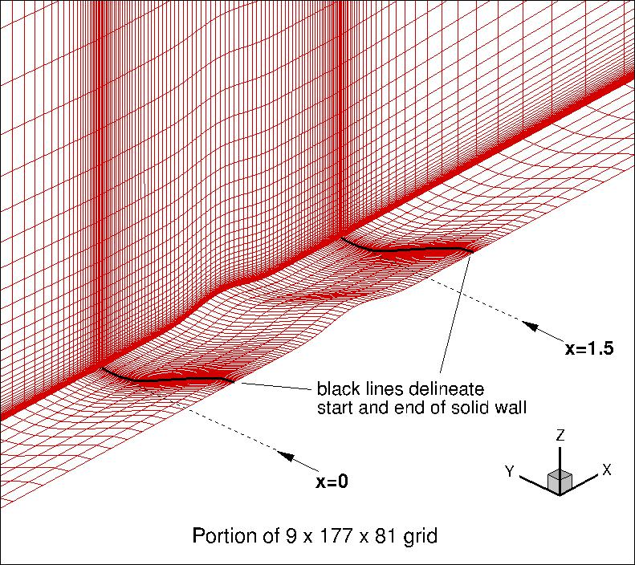

Public Access (formerly Langley Research Center)Turbulence Modeling Resource |
Return to: 3D Modified Bump-in-channel for Turbulence Model Numerical Analysis Intro Page
Return to: Turbulence Modeling Resource Home Page
TURBULENCE MODEL NUMERICAL ANALYSIS
Grids - 3D Modified Bump-in-channel Verification Case
A series of 6 nested 3-D grids are provided.
Each coarser grid is exactly every-other-point
of the next finer grid, ranging from the finest 65 x 1409 x 641 to the coarsest 3 x 45 x 21 grid.
The finest grid has minimum spacing at the wall of y=5 x 10-7, giving an approximate average
y+=0.06 over the plate at the Reynolds number run.
Even the coarsest grid has reasonably fine wall-normal spacing, giving an approximate average
y+=2.0 over the plate (although this grid is probably far too coarse in general to be useful).
The grid family is stretched in the wall-normal direction, and is also clustered
near the plate leading and trailing edges. The spacing in the spanwise direction
is uniform. The following figure shows a portion of
the 9 x 177 x 81 grid:

Note: be sure to use double precision when reading the grids!
STRUCTURED VERSIONS OF
GRIDS
PLOT3D Files
The "base" 2-D
(PLOT3D formatted, MG, nbl=1) files are provided below. (These are identical to the 2-D files provided on the
2D Bump-in-channel verification grid page.)
The 3-D grids
are built starting from these "base" 2-D grids, but they are manipulated using a specifically-hardwired
Fortran90 program (modified on 8/7/2015).
(This program is different from the Fortran program provided on the the
3D Bump-in-channel verification grid page.)
This program creates 3-D grids that are half in spanwise extent of the original grids given for the
3D Bump-in-channel Verification Case, to take advantage of symmetry.
This program also insures that all points "snap" exactly to the analytic definition of the bump and
symmetry planes, which was not the case for the "base" grids.
Furthermore, it changes the way the gridpoints approach the upstream and downstream farfields, gradually
un-shearing the distribution toward the box-like outer boundary (in the grids for the original 3-D
verification case, the grid point distribution abrubtly changed at the upstream and downstream locations).
Bottom line: these grids should be fairly similar to the grids given on the
3D Bump-in-channel verification grid page, except (1) current grids are half-span
due to symmetry, (2) there are small differences due to insuring that points now lie on the analytical surface,
and (3) gridpoints approach the upstream
and downstream farfields differently.
Download the "base" 2-D grids used with the Fortran90 program to build the 3-D grids here:
If desired, example Neutral Map Files
associated with 3-D version of the grids after conversion
are given here (these files specify grid indices associated
with each boundary condition - see
The Neutral Map File):
Return to: 3D Modified Bump-in-channel for Turbulence Model Numerical Analysis Intro Page Return to: Turbulence Modeling Resource Home Page
Page Curators: Christopher Rumsey,
Ethan Vogel,
Clark Pederson
Last Updated: 05/13/2019